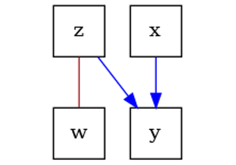
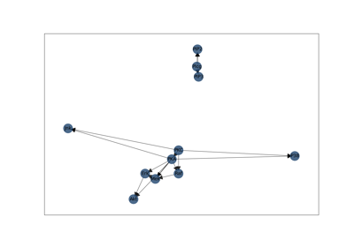

dodiscover.ci.BaseConditionalIndependenceTest#
- class dodiscover.ci.BaseConditionalIndependenceTest[source]#
Abstract class for any conditional independence test.
All CI tests are used in constraint-based causal discovery algorithms. This class interface is expected to be very lightweight to enable anyone to convert a function for CI testing into a class, which has a specific API.
Methods
test(df, x_vars, y_vars[, z_covariates])Abstract method for all conditional independence tests.
- abstract test(df, x_vars, y_vars, z_covariates=None)[source]#
Abstract method for all conditional independence tests.
- Parameters:
- df
pd.DataFrame The dataframe containing the dataset.
- x_vars
Setofcolumn A column in
df.- y_vars
Setofcolumn A column in
df.- z_covariates
Set, optional A set of columns in
df, by default None. If None, then the test should run a standard independence test.
- df
- Returns:
Examples using dodiscover.ci.BaseConditionalIndependenceTest#

Basic causal discovery with DoDiscover using the PC algorithm
Basic causal discovery with DoDiscover using the PC algorithm

Causal discovery with interventional data - Sachs dataset
Causal discovery with interventional data - Sachs dataset